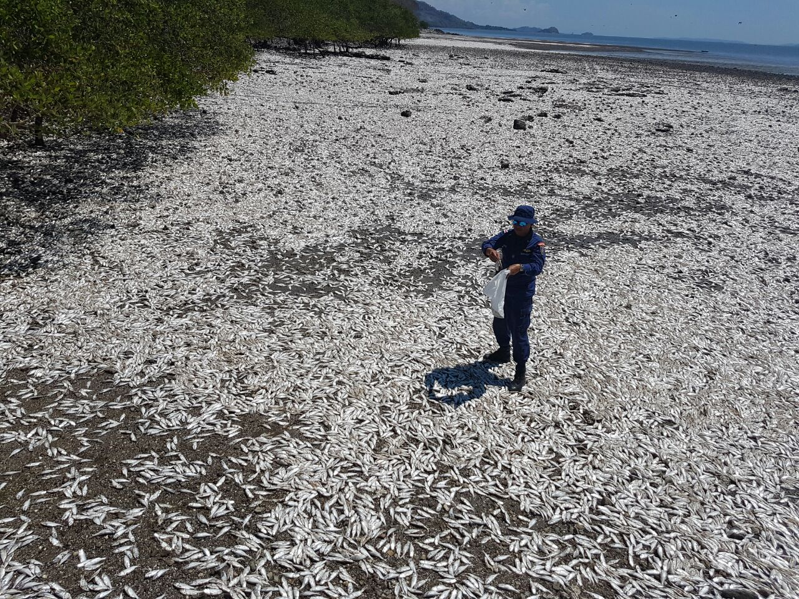
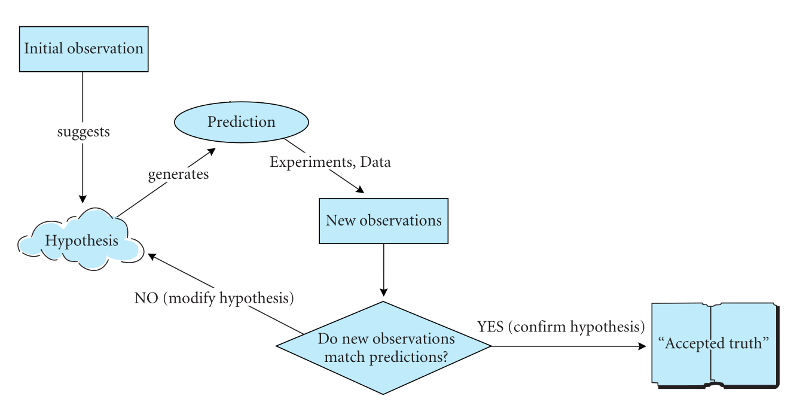
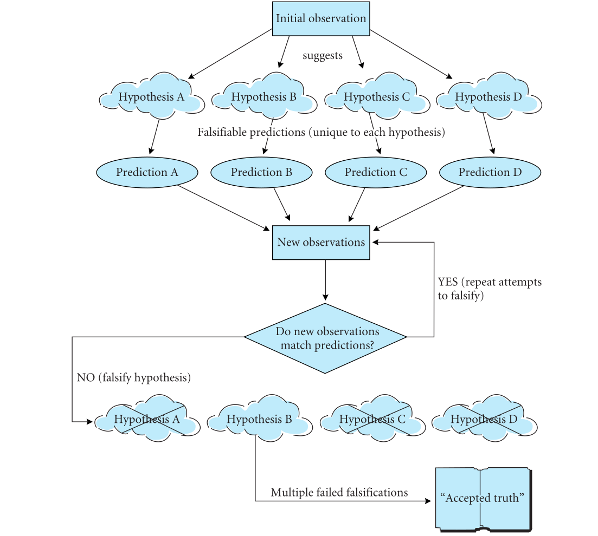

Introducción
B0305 – Lab Eco Gral
https://ucr-ecologia.github.io/B0305-lab-eco-gral/
Escuela de Biologia, Universidad de Costa Rica
01 Aug 2025
Quienes somos
Profes

Ecología Tropical

Ecología y evolución acuática
Sitio web del curso: https://ucr-ecologia.github.io/B0305-lab-eco-gral
Asistentes
Murciélagos
Plantas
Herpetofauna
Afiliación o rol
Afiliación o rol
Hipótesis y predicciones
Una hipótesis ¿Qué es?
- Posible explicación para un fenómeno observado
- Usualmente describen relaciones de causa y efecto
- Si las observaciones son el “qué”, las hipótesis son el “cómo”
- Las observaciones son los datos
- El objetivo de un estudio científico: entender las causas de fenómenos observables
- Es posible probarlas
- Genera nuevas predicciones
¿Qué proponen de hipótesis?
3 de marzo 2017. Veinte toneladas de peces muertos en el Golfo de Nicoya
Ejercicio 1
- HIPÓTESIS: Mayor densidad de plántulas de ciprés bajo que fuera la sombra de arbustos
- PREDICCIONES: No pone.
- VEREDICTO: Esto NO es una hipótesis, sino una predicción. No describe el mecanismo que se está poniendo a prueba
Advertencia
Mal uso del Método hipotético-deductivo (MHD)
Farji-Brener, A. G. (2003). Ecología Austral, 13(2), 223-227.Ejercicio 2
- HIPÓTESIS: La presencia de arbustos, al dar sombra y disminuir la desecación del suelo, favorece el establecimiento de plántulas de ciprés
- PREDICCIONES: No pone.
- VEREDICTO: Esto sí es una hipótesis. Propone un mecanismo que tiene que ver con sombra y humedad del suelo, pero no pone predicciones.
Advertencia
Mal uso del Método hipotético-deductivo (MHD)
Farji-Brener, A. G. (2003). Ecología Austral, 13(2), 223-227.Ejercicio 3
- HIPÓTESIS: La presencia de arbustos, al dar sombra y disminuir la desecación del suelo, favorece el establecimiento de plántulas de ciprés
- PREDICCIONES: Asociación positiva entre densidad de arbustos y densidad de cipreses.
- VEREDICTO: Hipótesis correcta pero predicción incorrecta. El resultado esperado de esta predicción no apoya ni descarta la hipótesis. El que haya una correlación entre arbustos y densidad de plántulas no dice NADA sobre los mecanismos propuestos en la hipótesis, que tienen que ver con sombra, humedad del suelo. O sea, las predicciones TIENEN que hablar de sombra y humedad. No dejen el mecanismo por fuera de las predicciones!
Advertencia
Mal uso del Método hipotético-deductivo (MHD)
Farji-Brener, A. G. (2003). Ecología Austral, 13(2), 223-227.Ejercicio 4
- HIPÓTESIS: La presencia de arbustos, al dar sombra y disminuir la desecación del suelo, favorece el establecimiento de plántulas de ciprés
- PREDICCIONES:
- Mayor densidad de plántulas de ciprés bajo que fuera la sombra de los arbustos
- Mayor humedad en suelos bajo que fuera la sombra de los arbustos
- Menor mortalidad de plántulas de ciprés por desecación bajo que fuera la sombra de los arbustos
- VEREDICTO: Esto sí es una hipótesis. Propone un mecanismo y predicciones que tienen que ver con sombra y humedad del suelo.
¡Bien!
Hipótesis Y predicciones correctas. Buen uso del Método hipotético-deductivo (MHD)
Farji-Brener, A. G. (2003). Ecología Austral, 13(2), 223-227.Método científico
El método científico
- Es una técnica para decidir entre hipótesis, basándonos en observaciones y predicciones
- Se dice que hay solo uno, pero en realidad son varios
Deducción e inducción
- Son dos importantes formas de razonamiento científico
- Ambos involucran sacar conclusiones (inferencias) de datos o modelos
- Deducción es de general a específico
- Inducción es de específico a general
Ojo
Tanto inducción como deducción se usan en el razonamiento científico
Deducción: general a específico
Premisas generales:
- Todas las hormigas en el bosquecito son del género Myrmica.
- Esta hormiga en particular fue muestreada en el bosquecito
- Conclusión: Esta hormiga en particular es del género Myrmica.
Ojo
También se le llama “inferencia cierta”: si las premisas 1 y 2 son ciertas, la conclusión TIENE que ser cierta
Inducción: específico a general
La estadística es inductiva: Sacamos conclusiones generales a partir de una muestra limitada. Por ejemplo:
- Tras revisar 25 hormigas, veo que son del género Myrmica
- Todas estas 25 hormigas fueron muestreadas en el bosquecito
- Conclusión: Todas las hormigas del bosquecito son del género Myrmica.
Ojo
También se le llama “inferencia de probabilidad”: La conclusión probablemente es cierta, pero nuestra certeza aumenta con el tamaño de la muestra (e.g. en vez de 25 hormigas, muestrear 1000)
En la práctica usamos una mezcla
El método hipotético-deductivo es una mezcla de inducción y deducción, ya que con las predicciones (conclusiones deductivas de la hipótesis) se puede ver si se cumplen o no por medio del contraste con datos empíricos y análisis estadístico (parte inductiva).
Método inductivo
- Toda investigación científica empieza con una observación que estamos tratando de explicar
- El método inductivo toma una observación y desarrolla una sola hipótesis
- A través de la deducción, generamos predicciones
- Probamos las predicciones colectando más observaciones (datos)
- Si las observaciones están de acuerdo con las predicciones, hay apoyo para la hipótesis
- Si no, se modifica la hipótesis para que considere las observaciones originales y las nuevas
- Se repite un ciclo de hipótesis - predicción- observación, hasta que la hipótesis se va acercando cada vez más a la verdad
- Es “confirmatorio”: buscamos datos que apoyan la hipótesis y luego modificamos la hipótesis para que se ajuste a los datos ya acumulados
Método inductivo

Ventajas:
- Enfatiza la relación estrecha entre datos y teoría
- Construye hipótesis basándose en información previa
Desventajas:
- Solo considera 1 hipótesis a la vez
- Fomenta “enamoramientos” con ciertas hipótesis
Método hipotético-deductivo (MHD)
- También empieza con un fenómeno que queremos explicar
- Pero nos pide que propongamos múltiples hipótesis cada una con sus predicciones, y que las probemos todas con nuevas observaciones
- El objetivo no es confirmar la hipótesis sino falsarla
Método hipotético-deductivo (MHD)
Método hipotetico-deductivo (MHD)
- El ciclo de observaciones y nuevas predicciones se repite
- Nunca confirma una hipótesis: se acepta la hipótesis que no se ha podido falsar
Ventajas:
- Nos obliga a considerar varias hipótesis desde el puro principio
- Enfatiza las diferencias predictivas entre ellas
Desventajas:
- A veces no tenemos varias hipótesis de trabajo
- No funcione a menos de que la hipótesis correcta esté entre las opciones
Prueba de hipótesis
Prueba de hipótesis
- Usamos estadística para describir patrones en nuestros datos y pruebas estadísticas para ver si las predicciones de una hipótesis tienen apoyo o no
- Aceptar o rechazar una hipótesis estadística es diferentes que aceptar o rechazar una hipótesis científica
Hipótesis de la perturbación intermedia
Fenómeno observable:
- En zonas intermareales con piedras de diferentes tamaños, las rocas medianas tienen mucho mayor riqueza de especies de organismos sésiles creciendo que piedras equeñas y grandes.
- Las olas vuelcan las rocas pequeñas con mucha frecuencia, y estas son dominadas por una sola especie de alga verde Ulva de sucesión temprana (Sousa 1979)
- Las olas casi nunca vuelcan las rocas grandes, dominadas solo por una especie de alga roja sucesional tardía Gigartina canaliculata (Sousa 1979).
Hipótesis de la perturbación intermedia
- Las olas crean espacios vacíos al remover especies de invertebrados competitivamente dominantes.
- El espacio abierto resultante puede ser colonizado por especies que son peores competidoras que de otra manera serían excluidas
Hipótesis de la perturbación intermedia
Predicción:
La diversidad de especies de invertebrados marinos cambia en función del nivel de perturbación de las piedras (Sousa 1979)
Hipótesis estadística nula (H0)
- Es el punto de inicio de una investigación científica
- Trata de explicar patrones en los datos de la manera más simple: a menudo esto es aleatoriedad o error de medición
- Si esa hipótesis nula se puede rechazar, podemos pasar a hipotesis más complejas
Probando la Hipótesis de la perturbación intermedia
- Usted va y mide riqueza de especies en rocas perturbadas y no perturbadas
- No encuentra diferencias entre los dos grupos
- No pudo rechazar la hipótesis nula y los patrones en los datos rechazan una de las predicciones de la hipótesis
Ojo
Ausencia de evidencia no significa evidencia de ausencia - no rechazar una H0 no significa tener que aceptarla
Hipótesis de la distribución ideal libre (DIL)
- Aquí, el patrón estadístico es igual pero la conclusión científica es diferente
- Esta hipótesis predice que los organismos se desplazan entre hábitats para modificar su densidad de manera que tengan un nivel de desempeño promedio igual en diferentes hábitats (Fretwell y Lucas 1970)
- Predicción: el desempeño de los organismos en hábitats distintos es igual aunque su densidad poblacional sea distinta
Probando la DIL
- Digamos que ud. mide la tasa de crecimiento poblacional de aves (muy importante para el desempeño de las mismas)
- Usted no logra rechazar la H 0 , o sea no hay diferencia que las tasas de crecimiento difieran entre hábitats
- Pero, en este caso, no rechazar la H 0 de hecho apoya la predicción de la distribución ideal libre
Importante
Las hipótesis estadísticas y científicas son cosas diferentes.
Es su trabajo determinar si apoyar o refutar las hipótesis estadísticas dan evidencia positiva o negativa para sus hipótesis científicas.
Hipótesis nula estadística vs. hipótesis científica
Valores de p
- “los niveles de hormonas glucocorticoides (GC) en perezosos no expuestos a ruido de carros fue de 679 ng GC/G, pero en perezosos expuestos a carros fue de (1530 ng GC/g)”
- ¿Cómo sabemos si esta diferencia es lo suficientemente grande como para deberse a carros?
- Podemos hacer una prueba estadística como una
t de student, que nos va a dar un estadístico de prueba, y un valor de probabilidad (o valor dep) asociado
La hipótesis estadística nula H0
- Antes de definir la probabilidad de una prueba estadística (o sea, el valor de
p) debemos primero definir qué es la hipótesis estadística nula, o H0 - ¿Qué era? la explicación más sencilla posible: p. Ej. las diferencias en GC refleja variación aleatoria entre grupos y no refleja ningún efecto sistemático de los carros
- H0: Las diferencias entre grupos no son mayores de lo que esperaríamos simplemente debido a variación aleatoria entre grupos
- Esta es la hipótesis estadística nula: hipotetiza que un mecanismo específico o alguna fuerza (que NO es variación aleatoria) NO está operando aquí.
Hipótesis alternativa (HA)
- Una vez que establecemos la hipótesis estadística nula, debemos definir una o más alternativas a la hipótesis nula
- HA : “diferencia observada en niveles promedio de GC entre grupos son demasiado grandes para ser causados por variación aleatoria entre individuos”
- Ojo! La HA no dice nada de carros! Solo se enfoca en el patrón presente en los datos. Podemos inferir mecanismos a partir del patrón, pero esto es un paso aparte
- La prueba estadística solo nos dice si el patrón es probable o no
¿Y el mecanismo causal?
- Diay, depende de la calidad de nuestro diseño experimental y de nuestras mediciones…
- Factores de confusión (p.ej. Persecución por turistas)
- Ojo, en la mayoría de las investigaciones las HA no se escriben porque hay muchas. Entonces simplemente se considera un juego de alternativas “que no son H0”
Valores estadísticos de p
Definición
Probabilidad de que las diferencias observadas (o más extremas) fueran detectadas si la H0 fuera cierta
- “los niveles de hormonas glucocorticoides (GC) en perezosos no expuestos a ruido de carros fue de 679 ng G C/G, pero en perezosos expuestos a carros fue de (1530 ng GC/g) (p=0.001)”
- Interpretación: hay muy baja probabilidad (0.01%) de observar esas diferencias entre grupos si H0 es cierta
- Si p=0.897, entonces “hay muy alta probabilidad (89.7%) de observar esas diferencias si la H0 es cierta”
Hipótesis estadísticas vs. científicas
- Lo más difícil de usar valores de p es que a veces nos cuesta distinguir entre hipótesis científicas nulas vs. hipótesis científicas. Recuerde:
- Una hipótesis científica propone un mecanismo formal para explicar patrones en los datos.
- P.ej. los carros estresan a los perezosos, lo cual proponemos probar midiendo niveles de GC en sangre y heces. Niveles más altos de GC podrían ser causados por cambios fisiológicos debidos al estrés que resultan en niveles elevados de GC
- En cambio, la hipótesis estadística nula es solo un enunciado sobre los patrones en los datos y la probabilidad de que pudieran haber sido causados por pura casualidad o procesos aleatorios NO relacionados con los factores que estamos estudiando
En conclusión
- Usamos las pruebas estadísticas y la hipótesis nula estadística para ver si hay patrones en los datos
- Luego, sacamos conclusiones (inferencias) sobre la validez de nuestras hipótesis científicas basándonos en los patrones estadísticos observados en los datos
- La potencia de nuestra inferencia depende de la calidad de nuestro diseño experimental y de muestreo (réplica, factores de confusión, presencia de controles, asignación aleatoria de los niveles del tratamiento) así como la calidad de nuestras mediciones
¿Listas y listos para probar?
Actividad afuera:
Vayan a buscar un fenómeno observable organismo-ambiente y luego desarrollamos hipótesis y predicciones para explicarlo!
Referencias
Farji-Brener, A. G. (2003). Uso correcto, parcial e incorrecto de los términos” hipótesis” y” predicciones” en ecología. Ecología Austral, 13(2), 223-227.
Gotelli, N. J., & Ellison, A. M. (2004). A primer of ecological statistics (Vol. 1), Capitulo 4. Sunderland: Sinauer Associates.
Sousa, W. P. (1979). Disturbance in marine intertidal boulder fields: the nonequilibrium maintenance of species diversity. Ecology, 60(6), 1225-1239.

B0305 – Lab Eco Gral